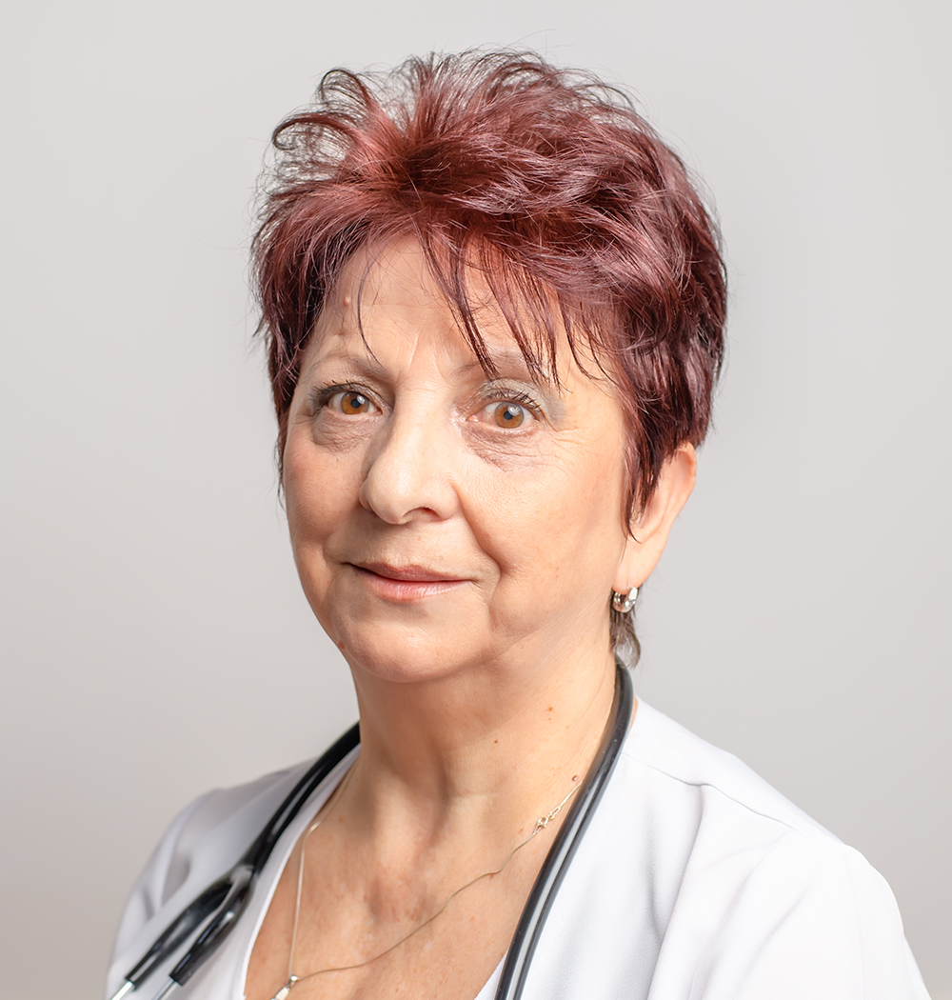

Spitalul Judetean de Urgenta Bistrita
Sectia Neonatologie
Locație: B-dul General Grigore Bălan, nr. 43, Etaj IV
Telefon: 0263 214 390/1 interior 153
Echipa medicala

Dr. Tanca Aurelia
Medic Primar Pediatrie
Dr. Kosztelnik Claudia
Medic Specialist Neonatologie
Dr. Staicu Mihaela Cristina
Medic Specialist Pediatrie
Greab Cornelia
Asistent Medical Principal
Dotare
45 paturi, din care:
Compartiment Terapie Intensiva Neonatala — 7 paturi
Compartiment prematuri — 12 paturi
injectomate (HITECHS PRO SP-12S — Lithuania)
pompe pentru muls (Pro MamaPlus — Germany)
lampi bactericide
lampi pentru fototerapie
monitoare EKG monitor puls, SatO2, TA. (MINDRAY, MEC 2000)
Servicii medicale
examen clinic, cantarire, masurare si toaleta zilnica a nou-nascutului
instruirea mamelor in privinta ingrijirii nou-nascutului si promovarea alaptarii
resuscitare neonatala
ventilatie manuala pe balon cu masca
ventilatie mecanica conventionala — 4 linii de ventilatie
ventilatie mecanica non-invaziva tip CPAP — 4 linii de ventilatie
monitorizare complexa functii vitale in mod continuu
microanaliza gazelor sanguine
cateterism ombilical si transcutanat